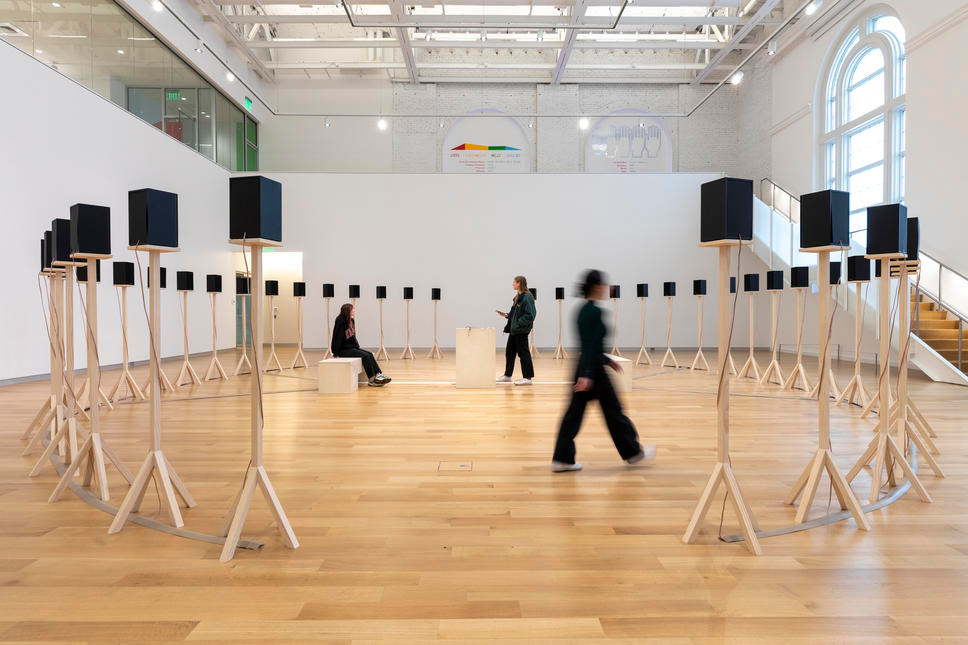
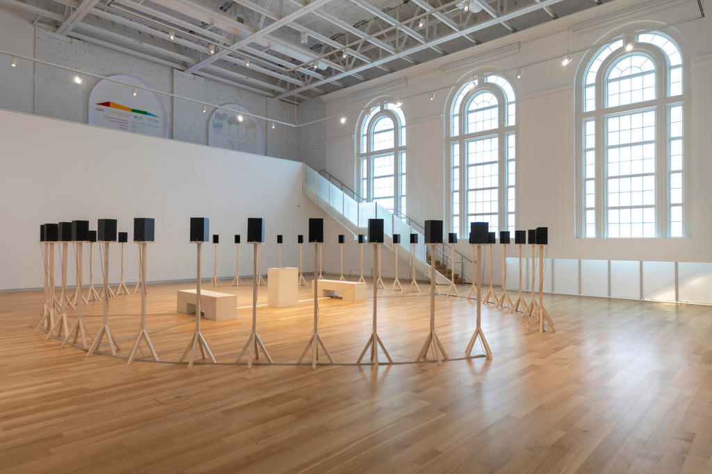
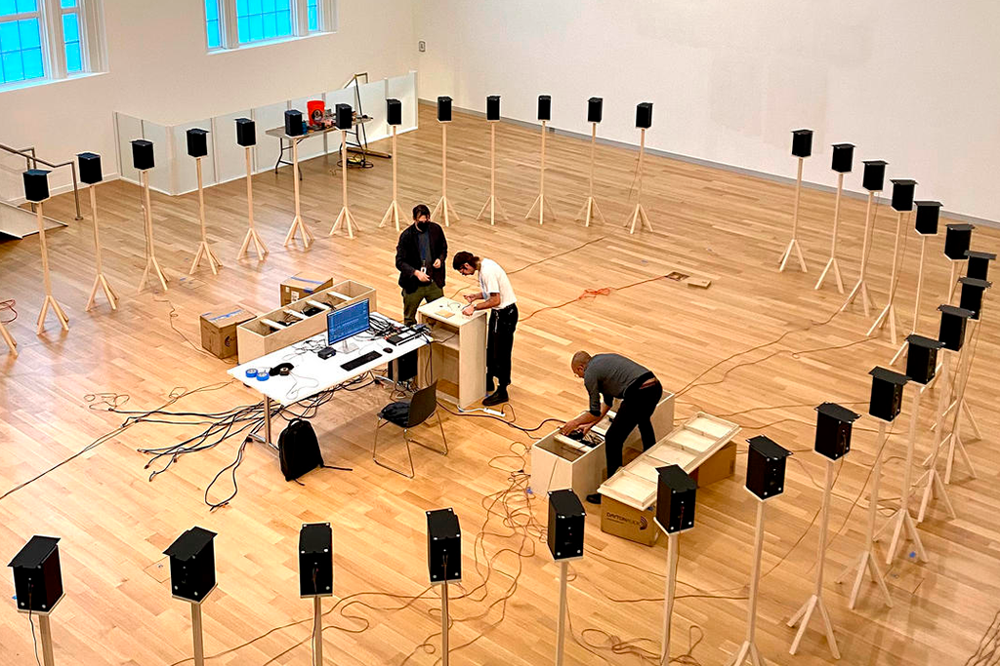

ABOUT
The MassArt Art Museum (MAAM) is Boston’s newest museum, a space to experience works by visionary artists at the forefront of contemporary art. As MassArt's teaching museum, we are committed to educating and empowering the next generation of artists—both on our campus and throughout the world.
EXHIBITIONS



Jace Clayton
They Are Part
February 23–July 30, 2023
Jace Clayton creates multisensory experiences that explore the unexpected and conversational nature of music from around the world. Interested in how sounds have and define social meaning, Clayton pens musical compositions, creates new audio instruments, and constructs participatory installations. They Are Part brings together three of Clayton’s works that interweave memories, sound, and public spaces, to create what he describes as “those waves of magic that happen when the human spirit joins with technology.”